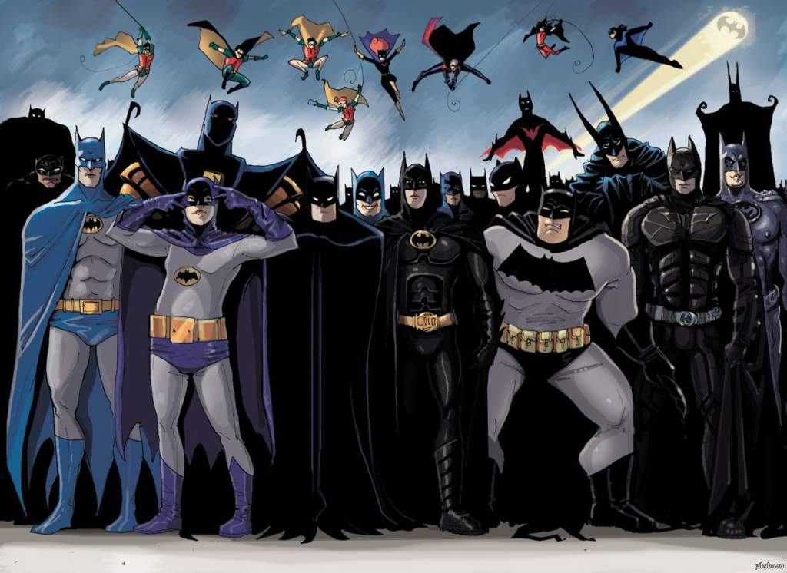

Most Well-Known Versions
Batman has appeared in countless forms across comics, movies, shows, and games. Each version brings something unique while staying true to the core identity of the Dark Knight.

Some versions include the classic 1939 Batman, the Adam West 1966 Batman, the Tim Burton/Batman 1989 version, the Christopher Nolan Dark Knight trilogy version, and the Arkham video game Batman.